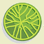

| Ragna Scribe
Version 1-2-1
|
 |
Author: Wolfgang Keller
Project Hosting: Sourceforge.Net
Acknowledgements: Data format design by "Treepad". Toolbar icons taken from the Noia Warm KDE 0.95 icon set created by Carles Carbonell Bernado. Encrypted file format from project "Password Safe".
Copyright: 2024 by Wolfgang Keller, Germany,
Public License: GNU General Public License 2.0